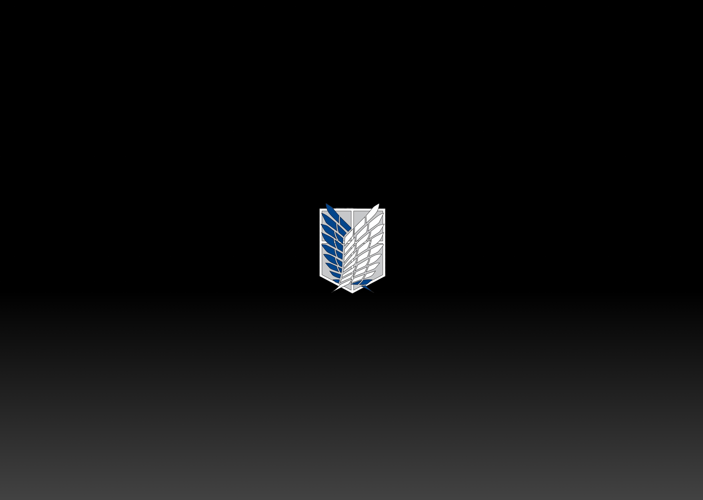

戦
AOT
Character Selection Interface
Designing a cinematic character selection experience inspired by Attack on Titan’s militaristic tone and narrative intensity.
The interface explores how typography, symbolism, and tactical UI structures can convey character identity before gameplay begins.
